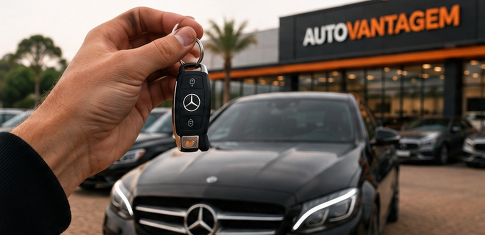
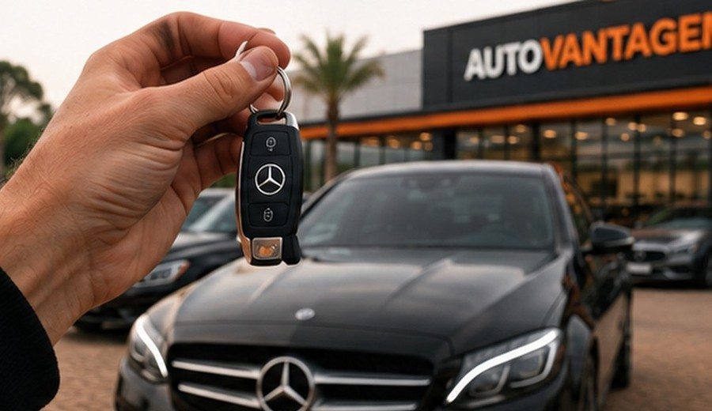

Para quem quer vender
Venda seu carro com mais alcance e agilidade.
Você envia os dados do veículo e a AutoVantagem apresenta a oportunidade a uma rede fechada de compradores, reduzindo o caminho entre anúncio, interesse e negociação.
Oi, quero vender meu carro
Redecompradores profissionais
Avaliaçãoposicionamento comercial
Até 24h*possibilidade de propostas
Suportedo contato à negociação

Seu carro apresentado a quem compra profissionalmente.
O diferencial é substituir a exposição aleatória por uma distribuição direcionada dentro de uma rede de compradores e lojistas.
Avaliação realista da oportunidade e posicionamento de mercado.
Rede profissional ativa para ampliar alcance.
Negociação com comunicação objetiva e menos burocracia.
Processo transparente, com condições conhecidas pelas partes.
Como funciona para vender
Um fluxo simples, concentrado no WhatsApp.
1
Envie os dadosMarca, modelo, ano, quilometragem, condição, localização e fotos.2
AvaliaçãoA oportunidade é analisada para definir posicionamento e aderência à rede.3
Apresentação à redeO veículo é distribuído aos compradores e lojistas qualificados.4
NegociaçãoAs propostas são conduzidas com suporte e transparência até o fechamento.Quer colocar seu carro na rede?
Envie agora as informações básicas pelo WhatsApp.
Dúvidas frequentes
É possível vender em 24 horas?
Pode ocorrer quando há aderência do veículo, preço e demanda da rede, mas o prazo não é garantido e depende da avaliação e da negociação.
A AutoVantagem compra meu carro?
A AutoVantagem atua na intermediação e conecta a oportunidade à rede de compradores.
Quais dados devo enviar?
Marca, modelo, ano, versão, quilometragem, localização, fotos, condição geral e eventuais informações de histórico.